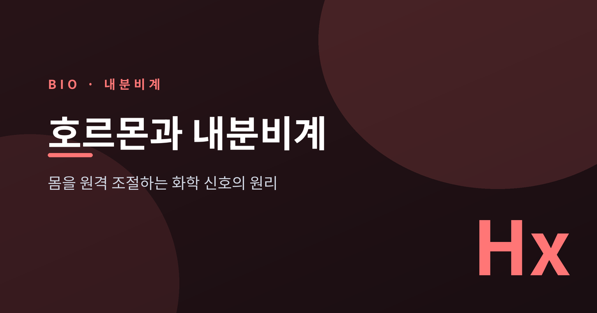
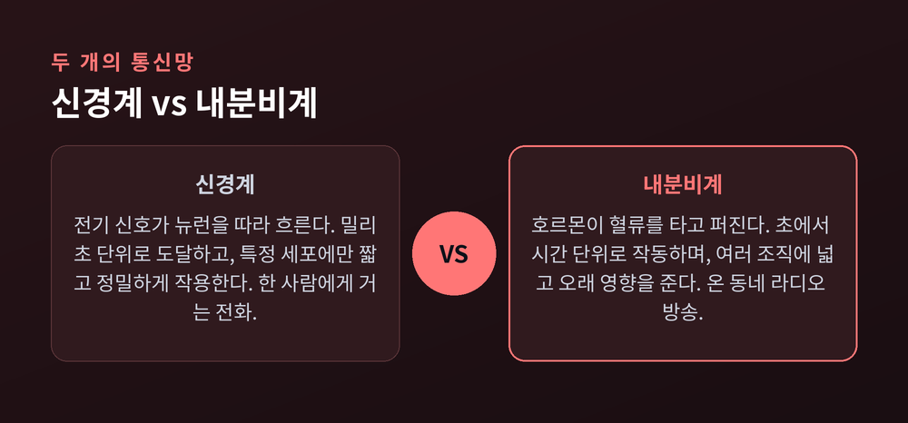
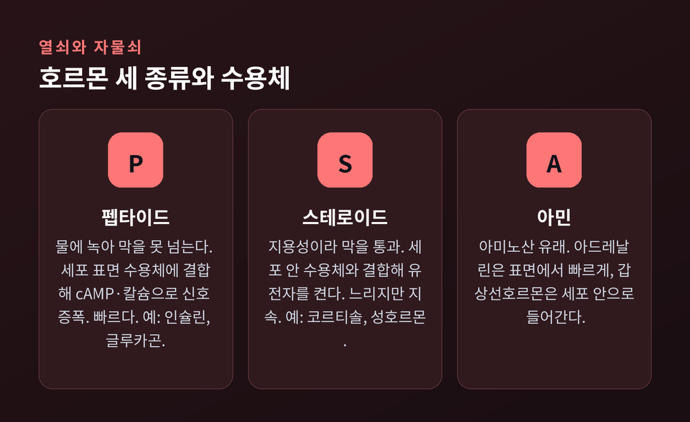
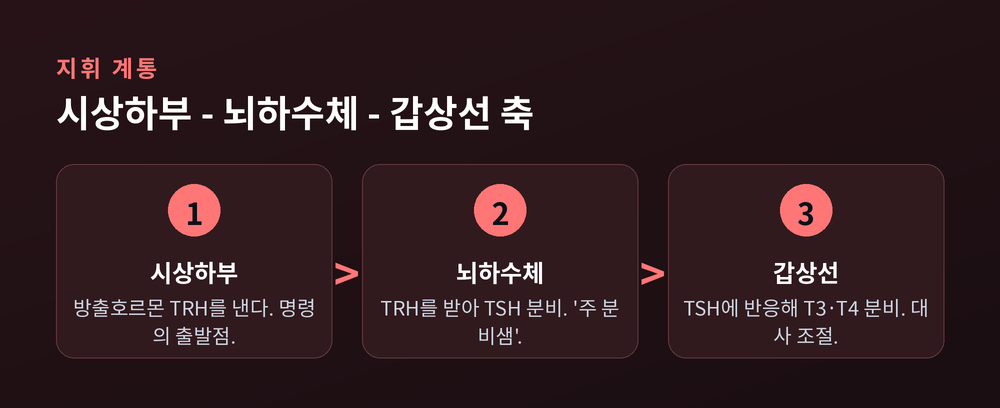
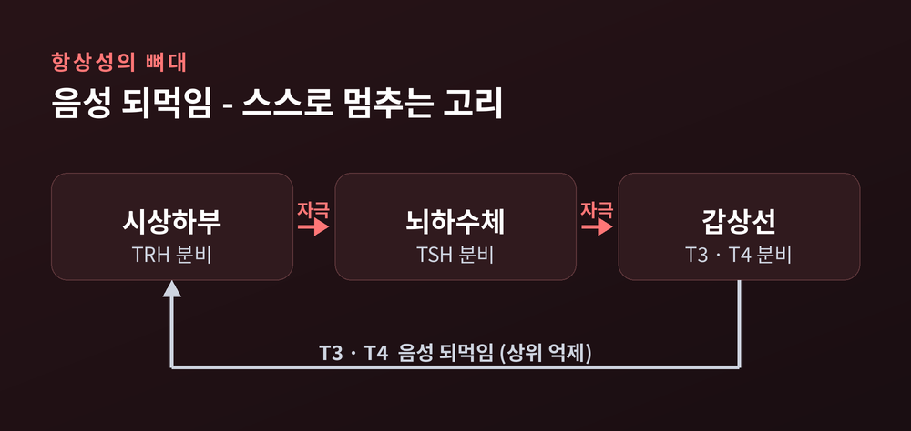
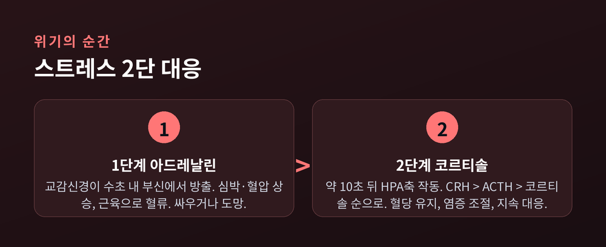

우리 몸에는 전선 하나 연결되지 않은 원격 조종 장치가 있습니다. 뇌의 명령이 피를 타고 흘러, 멀리 떨어진 장기의 스위치를 켜고 끕니다. 이번 글에서는 호르몬과 내분비계가 어떻게 화학 신호 하나로 몸 전체를 조율하는지 정리해 보겠습니다.
몸은 정보를 두 가지 방식으로 보냅니다.
하나는 신경계입니다. 뉴런을 따라 전기 신호가 흐릅니다. 목표까지 밀리초 단위로 도달합니다. 대신 효과는 짧고, 특정 세포에만 정밀하게 닿습니다.
다른 하나가 내분비계입니다. 분비샘이 호르몬을 혈류로 흘려보냅니다. 목표에 닿기까지 초에서 분, 길게는 시간이 걸립니다. 그러나 한번 작동하면 오래갑니다. 혈류를 타고 퍼지므로 여러 조직에 동시에 영향을 줍니다.
전화선과 라디오 방송의 차이라고 보시면 됩니다. 신경계는 한 사람에게 거는 전화, 내분비계는 온 동네에 퍼지는 방송입니다.
흥미로운 점은 호르몬이 극미량으로 일한다는 사실입니다. 혈류로 운반되며 희석되기 때문에, 표적에 닿을 때는 농도가 매우 낮습니다. 췌장 소도 안 인슐린 농도는 피코몰(1조분의 1몰) 수준으로 모델링됩니다. 그 미세한 양이 세포의 운명을 바꿉니다.

호르몬은 아무 세포나 조종하지 않습니다. 맞는 수용체를 가진 세포만 반응합니다. 열쇠와 자물쇠의 관계입니다. 그 열쇠의 재질에 따라 호르몬은 크게 셋으로 나뉩니다.
첫째, 펩타이드 호르몬입니다. 물에 녹는 성질이라 지질로 된 세포막을 통과하지 못합니다. 그래서 세포 바깥, 표면 수용체에 붙습니다. 대표적인 것이 G단백질연결수용체입니다. 문을 두드리면 세포 안에서 cAMP나 칼슘 같은 '2차 전령'이 신호를 증폭합니다. 이미 만들어진 효소를 켜고 끄는 방식이라 반응이 빠릅니다. 인슐린, 글루카곤, 성장호르몬이 여기 속합니다.
둘째, 스테로이드 호르몬입니다. 콜레스테롤에서 만들어진 지용성 분자입니다. 세포막을 그대로 통과해 안으로 들어갑니다. 그리고 핵 근처의 수용체와 결합해 유전자를 직접 켭니다. 새 단백질을 만드는 과정이라 느리지만, 효과는 오래 지속됩니다. 코르티솔과 성호르몬이 대표적입니다.
셋째, 아민 호르몬입니다. 아미노산에서 유래합니다. 아드레날린은 펩타이드처럼 표면 수용체에 붙어 빠르게 작동합니다. 반면 갑상선호르몬은 예외적으로 지용성이라 스테로이드처럼 세포 안으로 들어갑니다.
정리하면 규칙은 단순합니다. 물에 녹으면 문밖에서 노크하고, 기름에 녹으면 문을 열고 들어갑니다.

내분비계에는 명령 체계가 있습니다. 꼭대기에 뇌가, 정확히는 시상하부가 있습니다.
시상하부가 방출 호르몬을 내면, 그 아래 뇌하수체가 받습니다. 뇌하수체는 흔히 '주 분비샘'이라 불립니다. 여기서 나온 자극 호르몬이 다시 말단의 분비샘, 즉 갑상선과 부신과 생식샘을 움직입니다. 세 단계를 거치며 신호가 증폭됩니다.
뇌하수체 전엽은 여섯 가지 호르몬을 냅니다. 성장호르몬, 갑상선을 깨우는 TSH, 부신을 깨우는 ACTH, 생식샘을 조절하는 FSH와 LH, 그리고 프로락틴입니다. 후엽에서는 항이뇨호르몬과 옥시토신이 나옵니다. 다만 이 둘은 뇌하수체가 만든 것이 아니라, 시상하부가 만들어 후엽에 저장해 둔 것입니다.
갑상선을 예로 들면 이렇습니다. 시상하부의 TRH가 뇌하수체의 TSH를 부르고, TSH가 갑상선의 T3와 T4를 부릅니다. 명령이 위에서 아래로 한 단씩 내려갑니다.

명령만 있고 멈춤이 없다면 몸은 폭주할 것입니다. 내분비계가 안정적인 비결은 '음성 되먹임'에 있습니다.
원리는 온도조절기와 같습니다. 목표값, 곧 설정점을 정해 두고 그 주위를 유지합니다. 너무 높으면 낮추고, 너무 낮으면 올립니다. 핵심은 결과물이 상위 명령을 되받아 억제한다는 점입니다.
갑상선 축을 다시 봅니다. 갑상선이 낸 T3와 T4가 늘어나면, 이 호르몬이 거꾸로 시상하부의 TRH와 뇌하수체의 TSH를 억누릅니다. 결과물이 스스로 출발 신호를 끕니다. 그래서 아침 TSH 농도는 놀랍도록 일정하고, 갑상선호르몬 수치는 해가 바뀌어도 거의 흔들리지 않습니다.
만약 갑상선 자체가 고장 나 호르몬을 못 만들면, 억제가 풀려 TRH와 TSH가 치솟습니다. 몸이 더 세게 채찍질하는 셈입니다. 이 되먹임 구조가 항상성의 뼈대입니다.

가장 익숙한 되먹임 사례가 혈당 조절입니다. 두 호르몬이 시소처럼 반대로 움직입니다.
무대는 췌장의 랑게르한스섬입니다. 이 작은 세포 덩어리 안에서, 베타세포가 인슐린을 만듭니다. 소도의 약 75퍼센트를 차지합니다. 알파세포는 글루카곤을 만들며 약 20퍼센트입니다.
식사를 하면 혈당이 오릅니다. 그러면 베타세포가 인슐린을 냅니다. 인슐린은 세포에게 포도당을 거둬들이라 지시합니다. 혈당이 내려갑니다.
반대로 공복이 길어져 혈당이 떨어지면, 알파세포가 글루카곤을 냅니다. 글루카곤은 간에 저장된 글리코겐을 포도당으로 풀라고 명령합니다. 혈당이 올라갑니다.
이 줄다리기 덕분에 혈당은 대략 70에서 110mg/dL이라는 좁은 구간에 머뭅니다. 밥을 먹든 굶든, 몸은 이 창을 지키려 애씁니다.
스트레스 앞에서 몸은 두 박자로 반응합니다. 빠른 신경 반응이 먼저, 느린 호르몬 반응이 뒤따릅니다.
첫 박자는 아드레날린입니다. 위협을 느끼면 교감신경이 수초 안에 부신에서 아드레날린을 쏟아냅니다. 심장이 뛰고, 혈압이 오르고, 근육과 뇌로 피가 몰립니다. 싸우거나 도망치기 위한 준비입니다.
둘째 박자는 코르티솔입니다. 첫 신호가 나가고 약 10초 뒤, HPA 축이 켜집니다. 시상하부의 CRH가 뇌하수체의 ACTH를 부르고, ACTH가 부신의 코르티솔을 부릅니다. 코르티솔은 혈당을 끌어올려 에너지를 대고, 염증을 조절합니다. 위협이 길어져도 버티게 해 줍니다.
문제는 이 시스템이 완벽하지 않다는 데 있습니다. 위협이 지나가면 코르티솔은 내려가야 합니다. 그런데 스트레스가 만성이 되면 코르티솔이 계속 높게 유지됩니다. 그 대가로 면역 기능이 약해집니다. 위기용 장치를 상시로 켜 두면, 몸은 서서히 지칩니다.

정리하면 이렇습니다.
호르몬은 극미량의 화학 편지입니다. 전선 없이 혈류를 타고 흘러, 맞는 자물쇠를 가진 세포의 문을 엽니다. 시상하부에서 시작된 명령은 뇌하수체를 거쳐 말단으로 내려가고, 결과물은 다시 위로 올라가 스스로를 멈춥니다.
이 조용한 되먹임이 매 순간, 우리가 의식하지 못하는 사이에 몸을 원점으로 되돌립니다.
"몸은 요란하게 명령하지 않습니다. 미세한 신호 하나로 조용히 균형을 잡습니다."
오늘 아침에도 당신의 갑상선 수치가 어제와 거의 같았다면, 그 고요한 항상성 덕분입니다.